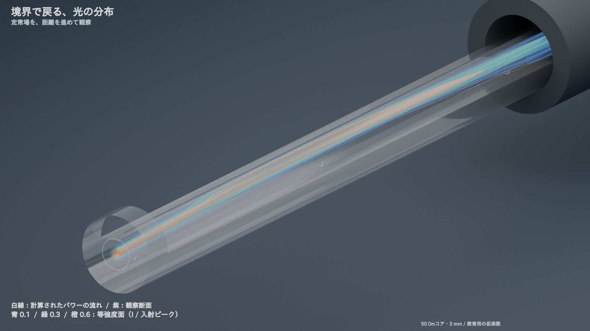
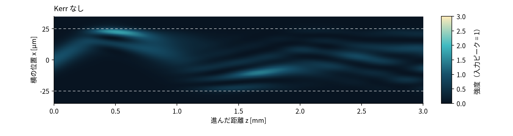
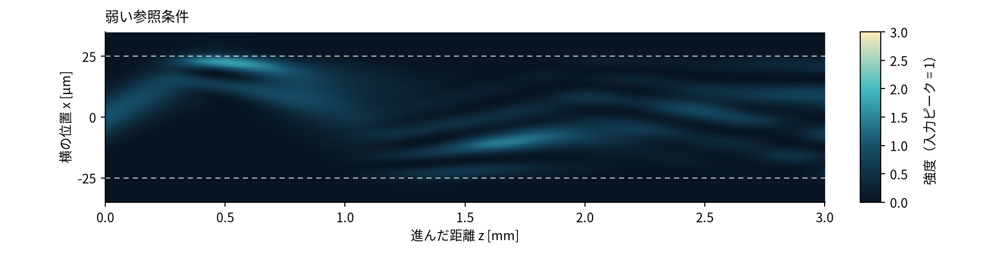
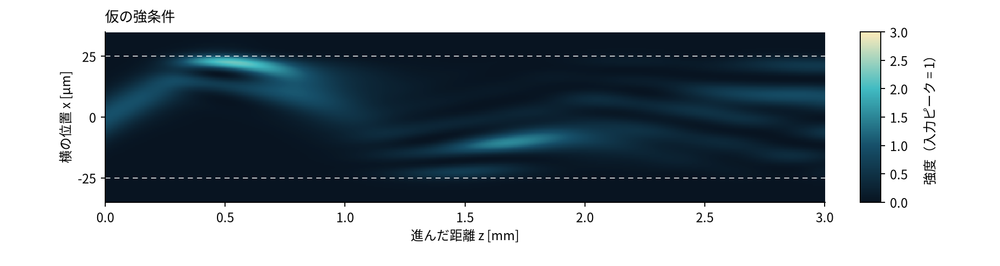
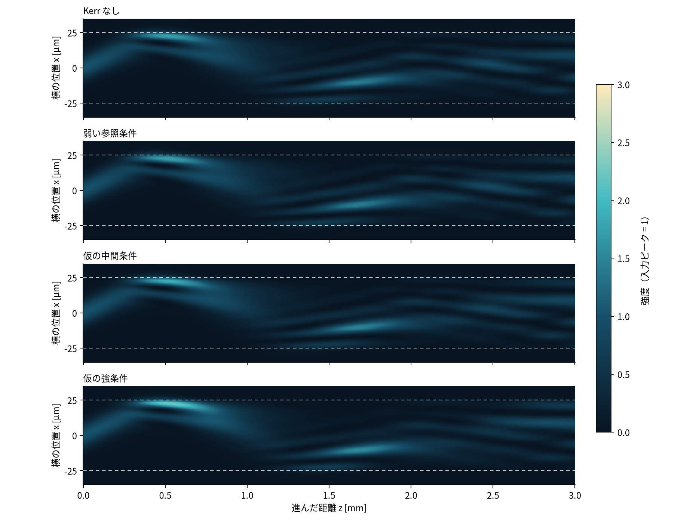
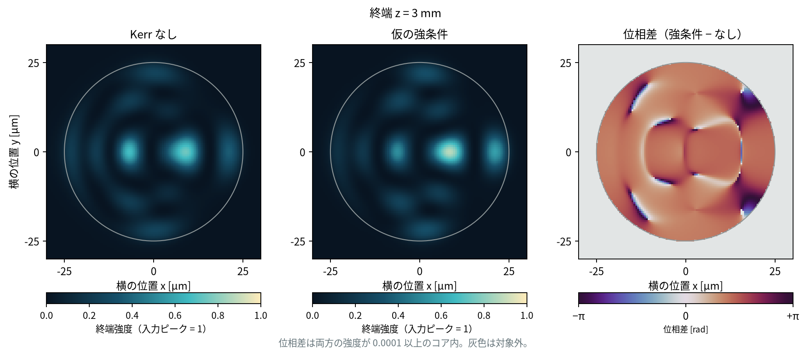

光ファイバの内部 / 3本の計算映像
反射する光は、強さによってどう変わるか。
境界で向きが戻る光の流れを追い、Kerr 効果が位相と反射後の分布にどう働くかを見比べる。
教育用の円形コア径 50 µm・3 mm の計算。変化を読み取るため、仮の強い Kerr 係数を含む4条件を比べる。元の1600 kmの単一モード通信・学習研究とは別の計算。

境界で、進む向きが戻る。
コアの縁に近づく光の流れと、その後の折り返しを見る。
光の強さが、その先の分布を変える。
同じ入射光を、Kerr なし・ありで並べる。反射した後の広がりと位置を見比べる。
波の山谷のずれが、重なり方を変える。
色で読むのは、Kerr なしの場合に対する位相の差。
作用の強さを、同じ尺度で比べる。
右へ行くほど伝搬が進む。白い破線はコアの境界。明るい帯が上下に戻る場所を見る。ボタンは計算済みの4条件をそのまま切り替える。
Kerr なし：入射ピークでの屈折率変化 0




仮の強条件では、反射後の位置と幅の差が、今回調べた計算条件の差より大きく現れた。弱い参照条件は線形の場合とほぼ重なり、その差は今回の数値確認の目安より小さい。

4条件の終端
| 条件 | 入力の屈折率変化 | コア内の幅 [µm] | コア内に残る光 [%] |
|---|---|---|---|
| Kerr なし | 0 | 16.3 | 92.5 |
| 弱い参照条件 | 1.60e-11 | 16.3 | 92.5 |
| 仮の中間条件 | 1.00e-04 | 16.3 | 93.3 |
| 仮の強条件 | 3.00e-04 | 16.2 | 94.7 |
幅はコア内の重心から測る RMS 半径。残る光は入力の積分強度に対する割合。
見せた差と、計算条件による差
| 比較量 [µm] | 強条件 − なし | 数値確認の目安 |
|---|---|---|
| コア内の横位置 | 2.02 | 0.0806 |
| コア内の幅 | 0.78 | 0.019 |
伝搬中の差の最大値と、今回の条件変更で観測した差の最大値。距離刻み・窓は 3 mm、横格子・半セル位置・45°の比較は 0.8 mm まで。 誤差の絶対的な上限とは扱わない。
Kerr の作用は、反射のたびに加える演出ではなく、強度に応じて伝搬中に蓄積する位相から生まれる。光が常に細くなるとは限らず、境界と干渉を含む分布として読む。
映像の線・面・色をどう読むか
流線は、計算した複素場から求めた近似的なエネルギーの流れ。個々の光子の軌道ではない。補間を変えた線の位置の差は最大2.03 µmであり、細かな反射点を定量的に測る表示としては使わない。強度の低い場所では線を止め、位置や幅の数値は全場から求める。
映像の等強度面には、いくつかの離散的な強度の色を使う。断面の強度図は連続色、位相差は −π〜+π の循環色で表す。この静的な位相図は、両方の場の強度が入力ピークに対して 1.00e-04 以上の場所だけを着色する。
連続光の定常分布を表示している。カメラの移動や距離の走査は見るための時間配分で、光の実際の飛行時間ではない。切り欠き・赤外光の色・形状の拡大は説明用の描画。